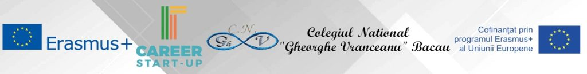
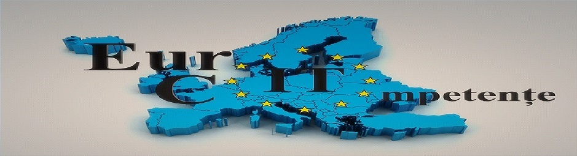

Erasmus+ Placements:

Erasmus+ KA1 2017-1-RO01-KA102-036700, IT Career Start-up, National College “Gheorghe Vranceanu”, Bacau
-
PROJECT OBJECTIVES:
- O1. Acquirement of professional web design skills for 64 mathematics - computer science students from the consortium highschools, through an 90h internship in IT companies from a foreign country
- O2. Developing of professional skills for training students in web-design ( methods, techniques and innovative instruments) by 4 computer science teachers from the consortium highschools, through 80 hours of job-shadowing activies in training institutions from another country for improving of a centered CDS based on skill improvement.
- O3. Development of personal, civic, intercultural and linguistic skills by 64 students and 4 teachers through a first-time european-mobility experience
- O4. Growth of the management skill of strategies to internationalize 15 european institutions from the education and training field and from the working market through signing of agreements, procedures and through exchange of good practices in the professional training field.

Erasmus+ KA1 2017-1-RO01-KA102-036916, Euro IT Competences, National College "Costache Negri”, Tirgu Ocna
-
PROJECT OBJECTIVES:
- O1. Improvement of the professional web-design competences level for 18 participants and graphic design skills level for 16 participants, through internships in IT companies from Portugal and Cyprus to facilitate acces on the working market.
- O2. Developing of personal and linguistic skills of participants through life and work experience in a foreign country
- O3. Developing of partnerships with 7 european organisations, internship providers, to increase their international size
- O4. Acquisition of knowledge about european culture, traditions, values and practices from 2 european countries